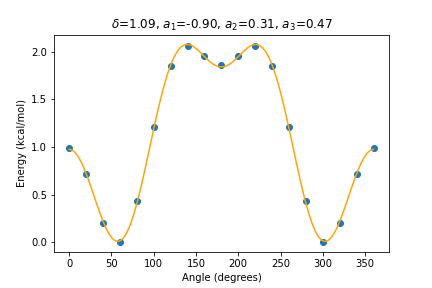
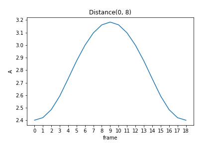
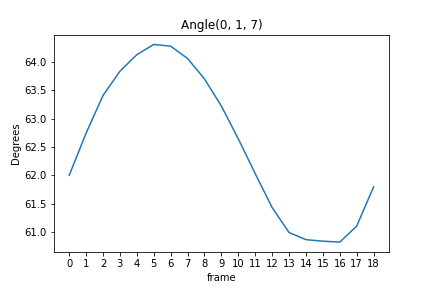
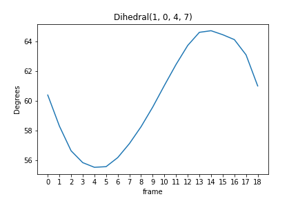

Object-oriented programming
J/K or →/← jump between sections
Atoms as tuples: functions only
No classes yet. Each time the data gets in the way, we change how it is stored. Hover the call.
ATOMIC_DATA: symbol → (atomic number, mass)
ATOMIC_DATA = {
'H': (1, 1.008), 'He': (2, 4.0026), 'Li': (3, 6.94), 'Be': (4, 9.0122),
'B': (5, 10.81), 'C': (6, 12.011), 'N': (7, 14.007), 'O': (8, 15.999),
'F': (9, 18.998), 'Ne': (10, 20.180), 'Na': (11, 22.990), 'Mg': (12, 24.305),
'Al': (13, 26.982), 'Si': (14, 28.085), 'P': (15, 30.974), 'S': (16, 32.06),
'Cl': (17, 35.45), 'Ar': (18, 39.95), 'K': (19, 39.098), 'Ca': (20, 40.078),
'Sc': (21, 44.956), 'Ti': (22, 47.867), 'V': (23, 50.942), 'Cr': (24, 51.996),
'Mn': (25, 54.938), 'Fe': (26, 55.845), 'Co': (27, 58.933), 'Ni': (28, 58.693),
'Cu': (29, 63.546), 'Zn': (30, 65.38), 'Ga': (31, 69.723), 'Ge': (32, 72.63),
'As': (33, 74.922), 'Se': (34, 78.971), 'Br': (35, 79.904), 'Kr': (36, 83.798),
}
H1 = ATOMIC_DATA['H'] H2 = ATOMIC_DATA['H'] O = ATOMIC_DATA['O'] h2o = [H1, H2, O]
def describe_atom(symbol, number, mass):
print(f'{symbol}: number {number}, mass {mass}')
def get_molecule_mass(molecule):
return sum(atom[1] for atom in molecule)describe_atom('C',
ATOMIC_DATA['C'][0],
ATOMIC_DATA['C'][1])get_molecule_mass(h2o)
A dictionary names its fields
H1 = {'symbol': 'H',
'number': ATOMIC_DATA['H'][0],
'mass': ATOMIC_DATA['H'][1]}
H2 = {'symbol': 'H',
'number': ATOMIC_DATA['H'][0],
'mass': ATOMIC_DATA['H'][1]}
O = {'symbol': 'O',
'number': ATOMIC_DATA['O'][0],
'mass': ATOMIC_DATA['O'][1]}
h2o = [H1, H2, O]
H1
Exercise 1: Atom dictionaries
Write get_atom(symbol) that returns an atom dictionary. Rewrite describe_atom and get_molecule_mass to take atom dictionaries.
H1 = get_atom('H')
H2 = get_atom('H')
O = get_atom('O')
describe_atom(H1)
h2o = [H1, H2, O]
get_molecule_mass(h2o)
H: number 1, mass 1.008 18.015
Electrons: the list of atoms does not know the charge
Hydroxide, OH⁻, has 10 electrons. The function counts 9.
def get_molecule_electrons(molecule):
return sum(atom['number'] for atom in molecule)
get_molecule_electrons(h2o)
oh = [O, H1] get_molecule_electrons(oh)
Exercise 2: Charge
Give get_molecule_electrons a charge argument.
get_molecule_electrons(oh, -1)
10
Keep atoms and charge together
With a separate charge, every call has to pass -1 along.
get_molecule_electrons(oh, -1)One dictionary keeps the atoms and the charge together.
oh = {'atoms': [O, H1], 'charge': -1}
Exercises 3–4: Molecule dictionaries
3. Electrons
Rewrite get_molecule_electrons to take a molecule dictionary.
oh = {'atoms': [O, H1], 'charge': -1}
get_molecule_electrons(oh)
10
4. describe_molecule
Write describe_molecule(molecule) for a molecule dictionary.
h2o = {'atoms': [O, H1, H2], 'charge': 0}
describe_molecule(h2o)
Molecule with 3 atoms
A class: the data and its functions together
The dictionaries work, but they print as a nest, nothing checks the keys, and the functions live apart from the data.
h2o = {'atoms': [O, H1, H2], 'charge': 0}
h2o
# a typo fails only when this line runs atom['nubmer']
describe_atom, get_molecule_mass, get_molecule_electrons… all have to know the keys.
Step through Atom('H'): self is the new object
Attributes and methods. Hover an access.
H1 = Atom('H')
H1
type(H1), type(H1) == Atom
H1.symbol, H1.number, H1.mass
H1.describe()
__str__: how an object prints
str() and print call __str__. Tick it.
The notebook shows the last line of a cell with another method, __repr__; that is why H1 alone still shows the address.
Exercises 5–6: A Molecule class
5. Molecule
Write a class for molecules: a list of Atom objects and a charge.
h2o = Molecule(atoms=[H1, H2, O], charge=0) print(h2o)
Molecule with 3 atoms
6. Methods
Add get_electrons, add_electron, remove_electron, is_radical and add_atom(atom).
h2o.get_electrons()
Molecule([Atom('O'), Atom('H')], -1).get_electrons()
Molecule([Atom('O'), Atom('H')]).is_radical()
10 10 True
Extra: __str__ with the formula. Hint: the atom counter of the first homework.
print(h2o)
Molecule H2O with 3 atoms
Checking the input: fail where the mistake is
add_atom accepts anything. A string slips in, and the error appears later, in print. Click the lines in order.
Change in place, or return a new object
An add_atom that changes h2o leaves no water. One that returns a new Molecule keeps both. Click a line.
__add__: give meaning to +
h2o + Atom('C')
h2o + atom calls h2o.__add__(atom). Green lines are new. Step through.
Syntax → method
| you write | Python calls |
|---|---|
Atom('H') | __init__(self, 'H') on a new object |
print(H1), str(H1) | __str__(self) |
h2o + atom | __add__(self, atom) |
Exercise 7: + for atoms
Implement Atom.__add__: adding two atoms gives a molecule.
print(Atom('O') + Atom('H'))
Molecule OH with 2 atoms
Alternative constructors: @staticmethod
print(Molecule(['C', 'C', 'H', 'H']))
Every symbol needs Atom(...) around it. A static method has no self: it is called on the class and builds the object from other inputs.
Exercise 8: Molecules from files
A static method Molecule.from_xyz_file(filename) that reads an xyz file.
print(Molecule.from_xyz_file('heme.xyz'))
Molecule C34O4N4FeH30 with 73 atoms
The course project: an ORCA scan of ethanol
Relaxed scan of the OH rotation in ethanol, 0° to 360° in 19 steps of 20°. Press play; pick what to plot.
Drag to rotate. Numbers are atom indices.
All you need is in scan.out (59 528 lines).
Course project
exercise1.py and exercise2.py, by Sat 31 Oct 23:59 · 2 points each1. The energy surface
Read the angles and energies of The Calculated Surface using the SCF energy. Plot the energy in kcal/mol, shifted so that the minimum is zero. Fit with scipy.optimize.curve_fit
and put δ, a1, a2, a3 in the title. argparse: input and output.

2. AtomsPlotter
Write a function that reads the 19 structures (symbols and coordinates) into a list of ase.Atoms. Write the class AtomsPlotter(atoms_list) with plot_distance(filename, atom1, atom2), plot_angle(filename, atom1, atom2, atom3) and plot_dihedral(filename, atom1, atom2, atom3, atom4). The calls are in the template. Hint: the methods of ase.Atoms.
CARTESIAN COORDINATES (ANGSTROEM) also appears at every optimisation cycle; take only the block after each FINAL ENERGY EVALUATION.


